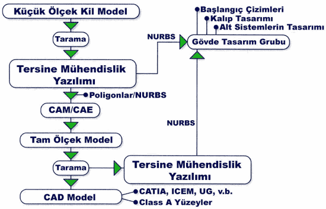
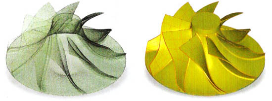
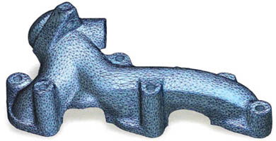
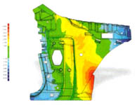
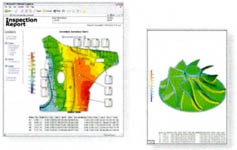

|
Ping
Fu, RE in Auto Industry, Time
Compression Technologies - Europe, Mart/Nisan 2004
Tercüme: Emre Bingöl,
End. ürün. tasarýmcýsý, Cadem A.Þ.
Henry Ford otomotiv endüstrisine montaj hattýný adapte ettiði
zaman daha önceleri tek renk siyah olarak sunulan otomobilleri
artýk tüketiciler herhangi bir renkte alabilir hale geldiler.
Bir yüzyýl sonrasý ise otomotiv endüstrisi, mümkün olan en
yüksek kaliteyi yakalayabilen, kiþisel beðeni ve ihtiyaçlarý
karþýlayan araçlar ve kitlesel
özel üretim ekonomisi sayesinde artýk tüketicilerin arzularýný
karþýlayabilir hale geldi.
Pazardaki
farklý ürüne karþý duyulan talep otomobil üreticileri için
tersine mühendisliði (RE, Reverse Engineering) montaj hattýnýn
kitlesel üretime yaptýðý etki kadar önemli bir hale getiriyor.
Modern otomotiv endüstrisi RE'yi 6 anahtar sebepten dolayý
kullanmaktadýr:
- CAD
yazýlýmlarýnda modellenmesi zor olan serbest formlarýn oluþturulmasý
- Data
aktarýmlarýnda çýkabilen engelleri aþmak
- Bir
CAD yazýlýmý ile tasarlanmasý imkansýz veya çok zor olan
karmaþýk geometriye sahip 3D modelleri oluþturmak
- Orijinal
CAD modeli ile iþlenen kalýp veya üretilen parça arasýndaki
uyumsuzluklarý gidermek
- Ergonomik
tasarým, retro tasarým, aerodinamik gibi alanlarda yenilikleri
hýzlandýrmak
- Bigisayar
destekli denetim (CAI, Computer Aided Inspection) ve mühendislik
analizleri için kalite ve performansý saðlamak
Bugün
Tersine Mühendisliðin Yeri
Tersine
mühendislik terimi, ilgili teknolojilerin haksýz rekabet yoluyla
orijinal bir tasarýmýn illegal olarak kopyalanmasý amacýyla
da kullanýlýyor olmasýndan dolayý negatif yönde etkilenmiþtir.
Bugünün üretim dünyasýnda ise RE kavramý yeni ürünlerin üretilmesi
ve eski ürünlerin yeni versiyonlarýnýn tasarlanmasý için kullanýlan
bir uygulama olarak geçer. Burada kullanýlan "Tersine"
(Reverse) terimi dijital ve fiziksel dünyalar arasýnda yapýlan
data aktarýmýnýn çift yönlülüðünden gelmektedir.
Bugün
yapýlan RE uyugulamalarý sayesinde otomobil üreticileri üretim
prensiplerini tasarým ile bütünleþtirerek zamaný kýsaltýrken
kaliteyi arttýrýyor, üretim masraflarýný düþürüyorlar ve böylece
kârlarýný yüksek miktarlarda arttýrýyorlar. RE uygulamalarý
ile Japonya'da zamandan nasýl tasarruf edildiðini ve Avrupa'da
otomobil üreticilerinin daha yüksek kaliteyi daha kýsa zamanda
nasýl elde ettiklerini örneklerle görebiliriz.
Üç
Aydan Üç Güne
Geleneksel
CAD/CAM/CAE yöntemlerini kullanarak tam ölçekli bir otomobili
tamamlamak için üç ay gibi bir süre gerekiyor. Bu süreyi üç
güne indirgemeye çalýþan Japon otomobil firmalarý için bu
kabul edilebilir bir süre deðil. Hýzlandýrýlmýþ bir süreç
yeni bir çalýþma akýþý ile saðlanabiliyor. Bu süreç tasarýmcýnýn
otomobil gövdesini dörtte bir ölçeðinde kilden çalýþmasý ile
baþlýyor. Küçük ölçekli bu model bir 3D optik tarama cihazý
ile ölçülüyor. Bu tarama cihazý ile birçok parçadan oluþan
yoðun 3D nokta bulutu datalarý elde ediliyor. Bu nokta bulutu
verileri hizaya getirilip birleþtiriliyor ve yoðunluðu da
uygun seviyeye getirilerek tek bir nokta bulutu elde ediliyor.
RE yazýlýmlarý yardýmýyla, kafes (mesh) yapýsýnda poligon
model veya NURBS yüzeyler elde edilebilir. Poligon modeller
mühendislik hesaplamalarý için analiz (FEA, CFD) yazýlýmlarýna
ve hýzlý prototip
imalatý için otoinþa
cihazlarýna (STL formatýnda) veri aktarmak için kullanýlýyor.
RE yazýlýmlarý yardýmýyla elde edilen NURBS yüzeyler de CAD/CAM
yazýlýmlarýna (IGES formatýnda) veri aktarmak için kullanýlmaktadýr.
Elde
edilen bu dijital model güncellemeler için yüzey tasarým grubuna
ve ilk imal kýsýtlamalarýný hesaplamalarý için üretim grubuna
gönderiliyor. Üretime gidecek dijital model tam boyutuna büyütülüyor
ve kil veya baþka bir malzemeden iþleniyor. Yine optik tarama
cihazý ile iþlenen tam boyuttaki model taranýyor. Buradan
elde edilen yoðun nokta bulutu üretilen fiziksel model ile
iþlenen dijital model arasýndaki toleransý doðrulamak için
kullanýlýyor. Eðer bu deðer tolere edilebilir ise tasarýmcýlar
RE yazýlýmýný tam boyuttaki CAD yüzeyini çýkarmak için, geleneksel
CAD yazýlýmýný da fonksiyonel tasarýmýný yapmak için kullanýyorlar.
Eðer deðer tolere edilebilir deðil ise kil model modifiye
ediliyor ve tarama, modelleme, kýyaslama aþamalarý tekrar
ediliyor ve bu aþamalar, tolere edilebilir ve tasarýmda istenen
deðerler elde edilinceye kadar sürdürülüyor.

Resim 1: Japon otomotiv firmalarý tarafýndan kullanýlan
tersine mühendislik iþ akýþý.
Sonuç
olarak mühendislik grubu tarafýndan oluþturulan CAD model
ve gövde tasarýmý grubu tarafýndan oluþturulan yüzey modeli
birleþtiriliyor ve "golden" (altýn) model denen
geriye kalan üretim aþamasý için gerekli model elde ediliyor.
Bu
yeni RE yöntemi ile tasarým, mühendislik, üretim departmanlarý
içindeki fiziksel ve dijital dünyalar arasý boþluk kapanmýþ
oluyor. Ayný dijital model üzerinde çalýþma ve bunu üretilen
model ile kýyaslama sayesinde daha hýzlý þekilde tasarým deðiþiklikleri
yapýlabiliyor. Bu þekilde otomobil üreticileri ayný maliyette
sayýsýz ürün çeþitliliði ve opsiyonlarý elde edebiliyor, farklý
ürünler için yenilikçi tasarýmlar yapabiliyorlar.
Sürekli
Kalite Ýyileþtirimi
Avrupa'da
otomobil üretiminde liderlik yapan bir firma için tersine
mühendislik motor iyileþtirme sürecinde çok önemli bir rol
almaktadýr. Bu firma yýlda yaklaþýk 600,000 adet motor imal
eden fabrikasýnda bilgisayar destekli denetim (CAI) dalýnda
yeni bir uygulama olarak tersine mühendisliði tamamlayýcý
rolde kullanmaktadýr.
Kalite bölümünde 900'ün üzerinde uzman üretim bandýný ve operasyon
ünitelerini denetlemektedir. Krank kutusu, krank þaftý, baðlantý
kolu, silindir kafasý gibi motor bloðunun elemanlarý firmanýn
hassas ölçüm laboratuvarlarýnda noktasal kontroller ile motor
parçalarý için gerekli milimetrenin yüzde biri deðerlerindeki
toleranslarý tutup tutmadýðý kontrol edilmektedir.

Resim 2: Fiziksel parçanýn taranmasý ile elde edilen otomobil
emiþ türbini ve orijinal CAD referans modeli.
Bu
küçük tolerans deðerleri çerçevesinde hareket etmek için firma
kooordinat ölçüm cihazlarýný (CMM) kullanarak parçalarý inceleme
yöntemine geçti. CMM cihazlarý parça üzerinde örnek noktalarýn
koordinatlarýný çýkarýr. Bu yöntem yavaþ gerçekleþiyor ve
sac parçalar gibi kompleks yüzeyli parçalarda yeterli derecede
hassas bir karþýlaþtýrma yapýlmasýna olanak vermiyor. Sonuçlar
2 boyutlu geometri ölçülendirmesi ve tolerans deðerleri þeklinde
kayýt ediliyor, ve direkt olarak 3D CAD model ile arasýndaki
baðý raporlayamýyordu.
CAI prosesi ile saniyeler içinde dokunmasýz
(non-contact) tarama cihazlarý kullanýlarak milyonlarca
nokta elde edilebilir. RE prensiplerini kullanan bir yazýlým
ile bu bilgi kullanýlýp otomatik olarak CAD model ile kýyaslanabilecek
fiziksel parçanýn dijital verisi elde edilir. Bu yöntem ile
tasarým, üretim ve kalite kontrol bölümleri arasýnda karþýlýklý
etkileþime sahip (interactive) bir bað oluþuyor.

Resim 3: Otomobil egzos manifoldunun gerçek parçadan
tersine mühendislik ile elde edilen poligon modeli
Poligon
model üzerindeki týrtýklý kenarlar, delikler ve yüzeyler yumuþatýlabilir,
ve model üzerindeki gereksiz noktalar atýlabilir. Tamamlanan
dosyalar birleþtirilebilir, hizaya getirilebilir ve STL formatýnda
kayýt edilebilir. Bu STL model CAI yazýlýmýna aktarýlarak
mühendisler tarafýndan otomatik olarak hizaya getirilip orijinal
CAD model arasýndaki parçanýn fonksiyonelliðini etkileyebilecek
geometri deðiþimleri analiz edilebiliyor.
CAD
datasý ve fiziksel parça arasýndaki küçük farklar bile performans
kusurlarýna ve hatalý mühendislik analizlerine yol açabileceðinden
otomobil üreticileri için tolerans deðerleri 0.02 - 0.03 mm
arasýnda deðiþmektedir (insan saç telinin kalýnlýðýndan daha
küçük deðerler). Eðer sonuçlar orijinal parçadan farký bu
deðerlerin üzerinde gösteriyor ise parça üzerinde yeniden
çalýþýlmasý için geri gönderiliyor.
CAI yazlýmý ile parçalar arasýndaki farklar görsel resimler
ve numerik sonuçlarla birlikte raporlar otomatik olarak oluþturuluyor.
Raporlar HTML, PDF, Microsoft Word, Excel ve çeþitli grafik
formatlarý gibi birçok standart formatta kayýt edilebiliyor.
Bu raporlar ayný zamanda tedarikçiler, kalite kontrol mühendisleri
ve firma içerisindeki diðer bölümlere veriliyor.
Avrupalý
bu otomobil üreticisi tersine mühendislik üzerine kurulu bu
CAI prosesi sayesinde zamandan kazanmasýna ek olarak mühendislik
performansýnýn ve ölçüsel doðruluðu saðlamasý ile kaliteyi
arttýrmasý konusunda Japon meslektaþlarý ile ayný görüþte
birleþiyor. Üretici firmaya göre tasarým mühendislerinin parça
kalitesi hakkýnda ürün yaþam çevrimi içerisinde daha erken
süreçlerde daha iyi bir bilgiye sahip olmasý sayesinde firma
maliyetleri düþürebiliyor ve son kullanýcýnýn eline daha kaliteli
bir ürün geçmiþ oluyor.
Dijital
ortamda birleþmeye doðru
Otomobil
üreticileri için ulaþýlmasý zor bir amaç bütün mühendislik
aþamalarý ve tedarikçileri arasýnda konsept fazýndan üretim
ve servis fazýna kadar bütün aþamalarda tek bir dijital model
kullanýlmasýdýr. Geleneksel CAD yöntemleri otomotiv endüstrisinde
birçok baþarýlar saðlamasýyla birlikte hatalara da sebebiyet
vermiþtir. Otomobil stilistleri halâ kil model üzerinde çalýþmanýn
zevkini tercih ediyorlar. Kontrolörler bu çalýþmalardan elde
edilen verilerle katý modeller arasýndaki kýyaslamayý yapmak
için çabalýyorlar. CAD sistemleri arasýndaki farklýlýklar
tasarým ve üretim prosesleri arasýndaki sürekliliði bozuyor.
Geleneksel
CAD, matematiksel sürekliliði (continuous) olan eðri ve yüzeyler
üzerine kuruludur. Bu etkili bir teknik olmasýna raðmen bugünkü
lider CAD sistemlerinde görüldüðü gibi bazý sýnýrlamalarý
vardýr. Þu ana kadar hantal olan bu proses, emeðin ve el iþçiliðinin
yoðun olduðu koordinat ölçüm cihazlarý (CMM) ile gerçekleþtiriliyordu.
|

|
|

|
|
Resim
4: Sac metal parçanýn taranmasý ile elde edilen model
ile CAD referans modelin kýyaslanmasý sonucundaki farklarý
gösteren renkli harita
|
|
Resim
5: Sac metal bir parçanýn ve bir emiþ türbininin bilgisayar
destekli denetleme sonuçlarýný (CAI) gösteren HTML ve
PDF formatýndaki raporlar
|
Son
10 yýlda geliþtirilen yeni hesaplama algoritmalarý sayesinde
artýk bütün nokta bulutu poligon bir modele dönüþtürülebiliyor
ve hatta parametrik hale getirilebiliyor. Bu yeni teknolojiler
gün geçtikçe global ölçekte kabul edilen, otomatik ve klasik
(manuel) yöntemlerin yerini alan bir hale geliyor. Daha güçlü
makineler, daha büyük bilgisayar hafýzasý ve hýzlý, dokunmasýz
(non-contact) tarama cihazlarý sayesinde parçalý (discrete)
geometrinin otomobil tasarýmý, üretimi ve kalite kontrolünde
giderek önemi artýyor.
Buradaki
gerçek güç, sürekli (continuous) ve parçalý (discrete) matematik
modeller arasýndaki bir yarýþma deðil, ikisinin arasýnda bir
birleþme meydana gelmesidir. Buradaki anahtar ise bu iki uygulamayý
doðru yerlerde birbiri arasýnda geçiþler yaparak baþlangýç
noktasýnýn dijital ya da fiziksel model olmasýndan baðýmsýz
olarak kullanmaktýr. Bugün dijital ve fiziki dünyalarýn birleþmesi
sayesinde hem mühendislik hem de tersine mühendislik teknolojileri
ürünlerin tasarým, üretim ve pazarlama yöntemlerini temelden
deðiþtirmelidir. Dünyanýn dijital kopyasýný oluþturmayý, dijital
bir resmi çekmek kadar kolay bir þekilde yapabilirsek üretimde
21. yüzyýlýn en büyük sýçramasý gerçekleþtirilebilir. Bu,
otomotiv dünyasýnda tüketicinin arzu ettiði bütün istekleri
karþýlayabilme amacýnýn baþarýlmasý anlamýna gelmektedir.
Ping
Fu, fiziksel objelerin dijital modellerini oluþturarak
tasarým, mühendislik, kitlesel üretim ve kalite güvencesi
proseslerini birbirine baðlayan patentli yazýlýmlar saðlayan
Raindrop Geomagic (www.geomagic.com)
firmasýnýn baþkaný ve CEO'sudur.
|